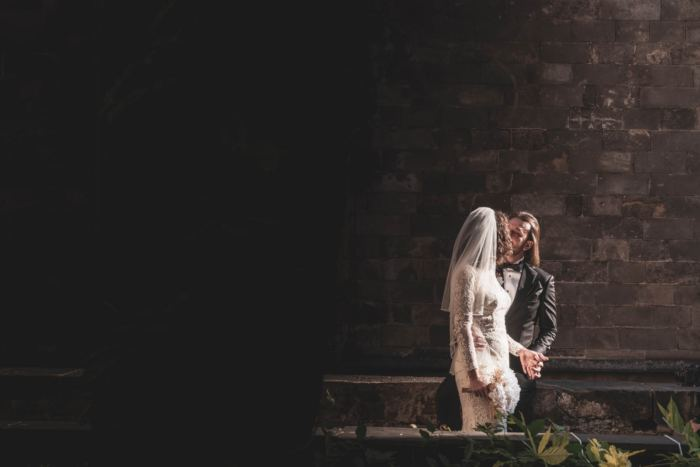
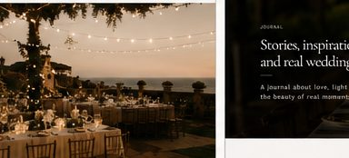
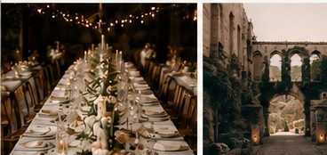
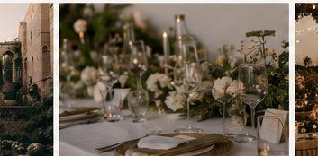

Guides
Planning a wedding in Barcelona
Essential things to know before choosing your date, venue and photography timeline.
Read More →
Every celebration has its own rhythm. My work is to notice it quietly. the light, the movement, the small gestures and the atmosphere you may not even realise you are creating.

Not every wedding needs to look the same. I photograph the atmosphere, the movement and the quiet in-between moments that make the day yours.



A portrait, a gesture, a quiet look. The strongest wedding photographs do not explain everything. they let you feel it.


No posing. No directing. Just real moments as they unfold. From the quiet in-between to the joy you can’t hold back.




The place, the light and the mood are always part of the story.
The portfolio should leave space for surprise. not only the classic images, but also the ones that feel alive.

Essential things to know before choosing your date, venue and photography timeline.
Read More →A visual note on atmosphere and emotion in wedding photography.
Read More →How the city becomes part of the memory.
Read More →